"You don't take a photograph, you make it."
- Ansel Adams
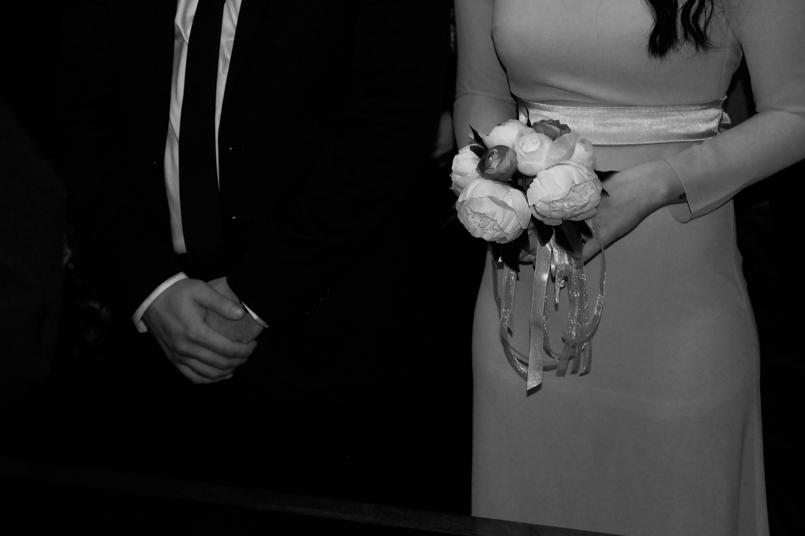
Copenhagen City Hall - Copenhagen, Denmark
04.03.2017
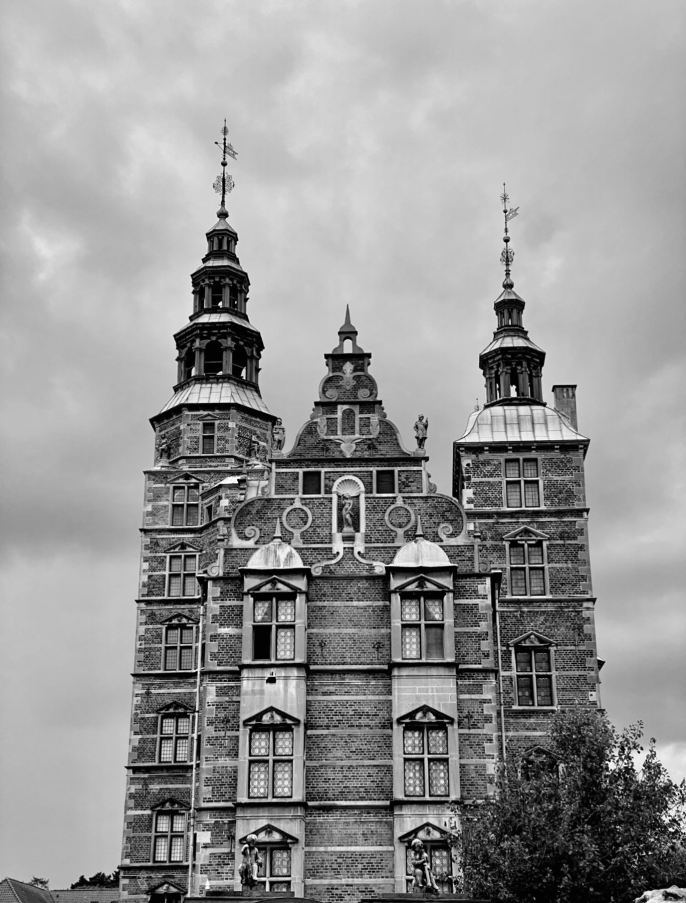
The King's Garden - Copenhagen, Denmark
10.08.2021
Copenhagen City Hall - Copenhagen, Denmark
04.03.2017
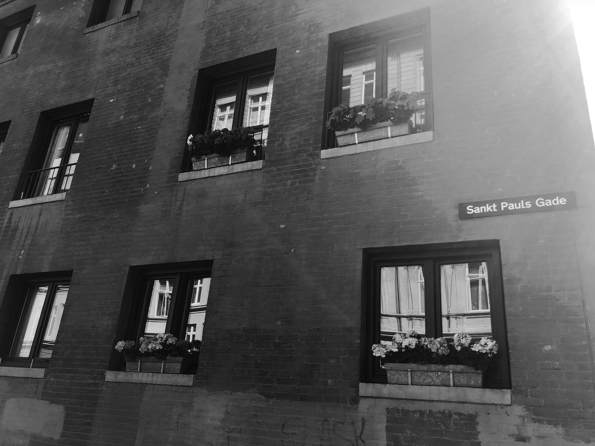
Copenhagen, Denmark
27.06.2018
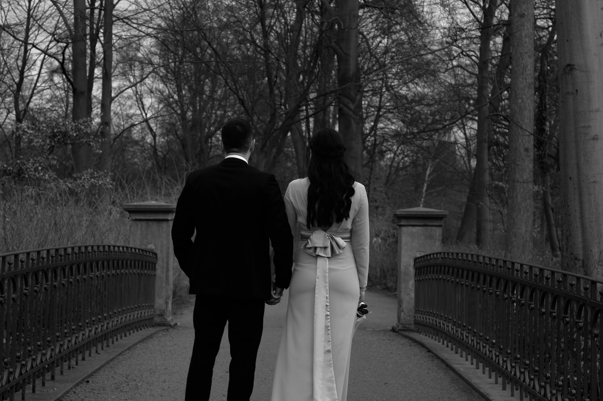
Frederiksberg Garden - Copenhagen, Denmark
04.03.2017
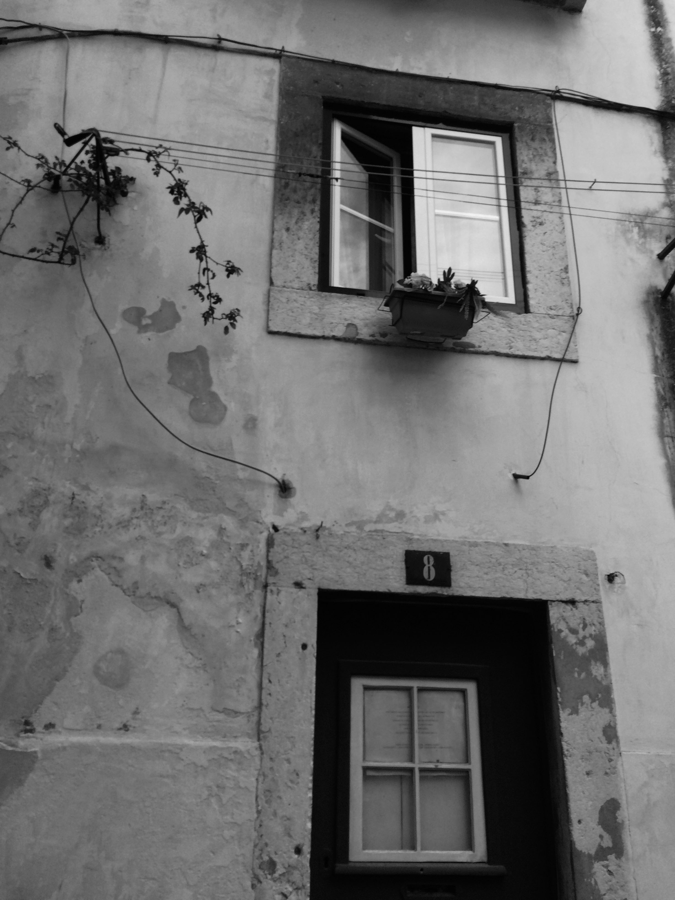
Lisbon, Portugal
14.03.2016
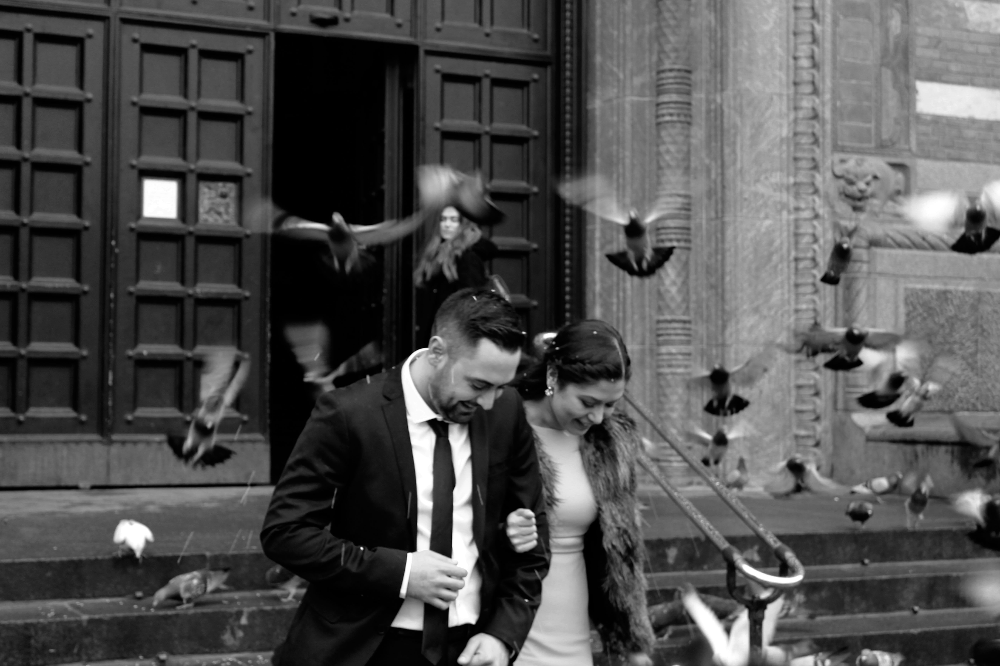
Copenhagen City Hall - Copenhagen, Denmark
04.03.2017
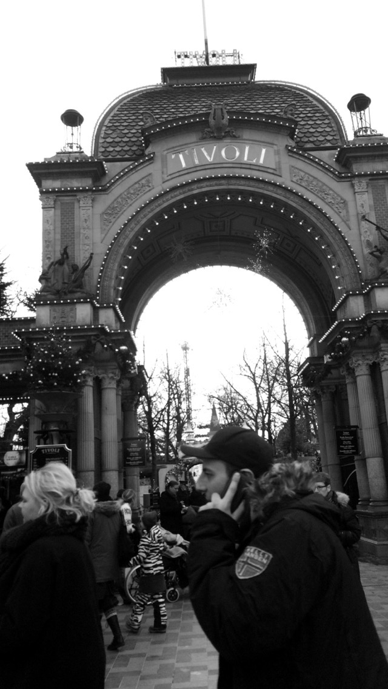
Copenhagen, Denmark
11.12.2015
Frederiksberg Garden - Copenhagen, Denmark
04.03.2017
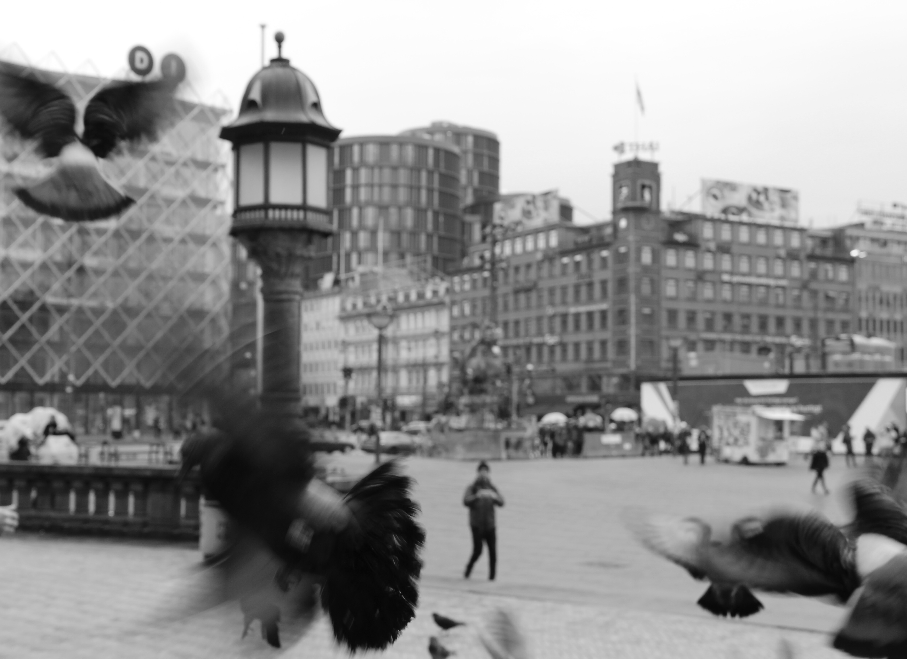
Copenhagen City Hall - Copenhagen, Denmark
04.03.2017
Copenhagen University Libary- Copenhagen, Denmark
07.11.2017
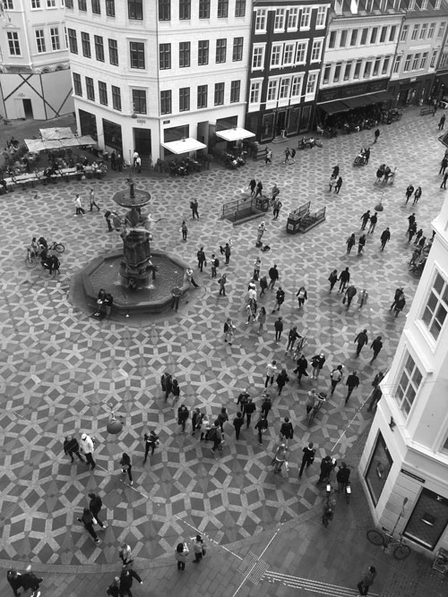
Copenhagen, Denmark
24.05.2017
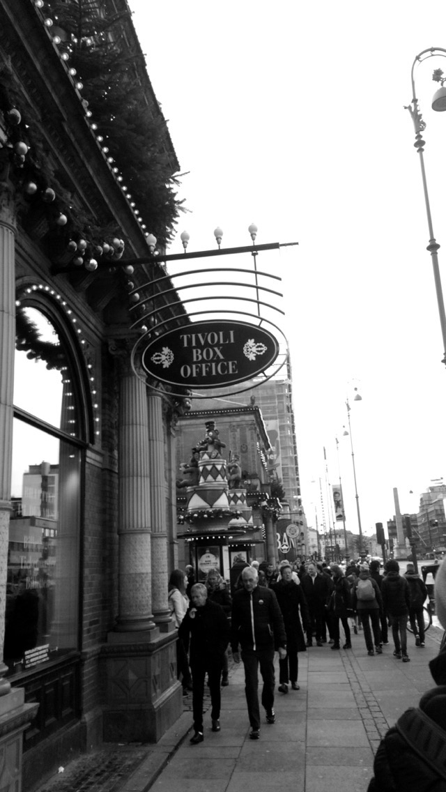
Copenhagen, Denmark
11.12.2015
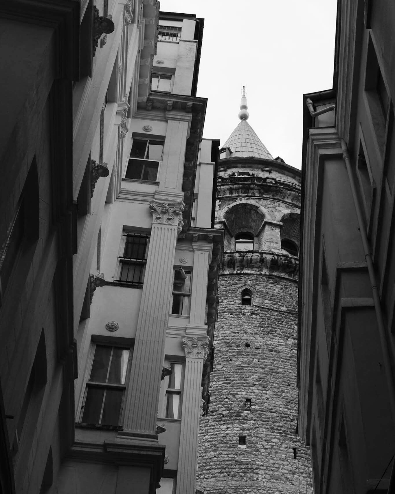
Galata Tower - Istanbul, Turkey
18.08.2017
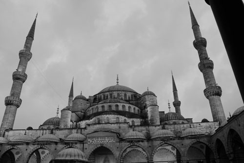
The Blue Mosque - Istanbul, Turkey
17.07.2017
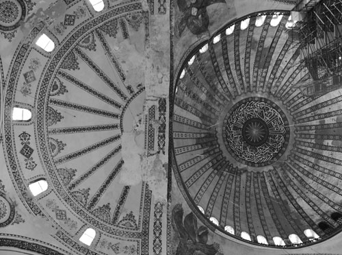
Hagia Sophia Mosque - Istanbul, Turkey
18.07.2017
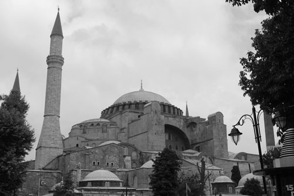
Hagia Sophia Mosque - Istanbul, Turkey
18.07.2017
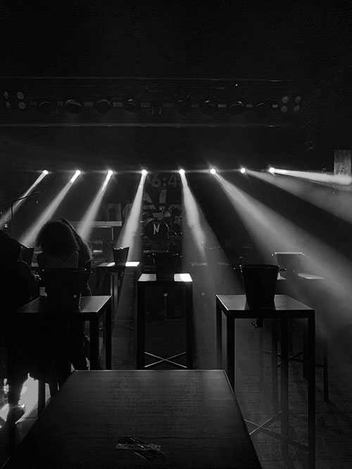
Bornova (6:45) - Izmir, Turkey
13.04.2019
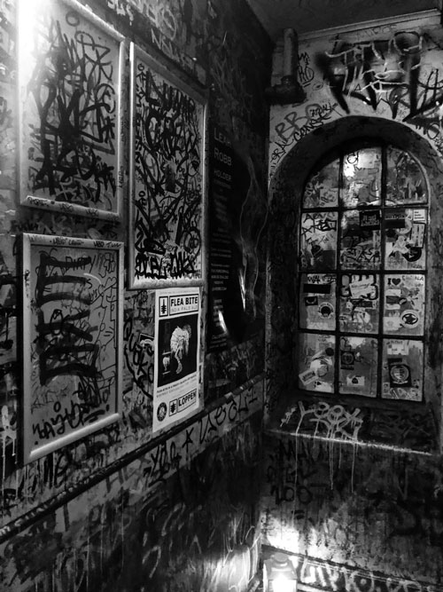
Christiania Loppen - Copenhagen, Denmark
07.11.2018
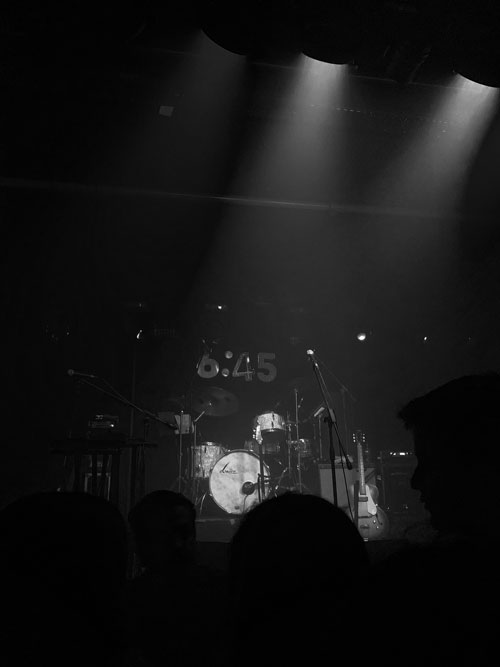
Bornova (6:45) - Izmir, Turkey
12.04.2019
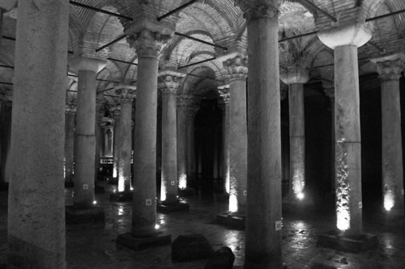
Basilica Cistern - Istanbul, Turkey
22.07.2017